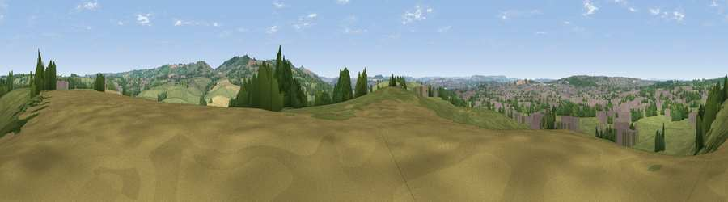

Viewpoint near North Common
#22786 in England · top 38% of its area beats it · near North Common · path 234 mWhere it is
The exact computed spot (ST 68425 71925). Click the marker for map links.
Public access: the nearest public right of way is about 234 m away — the final stretch may cross private land. Computed from Natural England's CRoW access layer and OpenStreetMap rights of way — not the legal definitive map. Always verify locally.
The view, rendered

A 360° render of this exact spot computed from the terrain model, tree cover and land cover — summer colours, afternoon light, calibrated against photographs of famous viewpoints. Real trees, hedges and buildings will differ in detail.
The panorama
Grey silhouette: terrain skyline in each direction (720 bearings, Earth curvature and refraction included). Dashed green: skyline with trees (+15 m) and buildings (+8 m) as obstacles. Blue strip: how far the ground is visible on each bearing.
Where the view opens
Wedge length = distance to the farthest visible ground on that bearing (vegetation-aware). Rings at 10, 25 and 50 km.
What fills the view
57% grassland · 18% woodland · 16% built-up · 9% cropland
Angular shares of the visible panorama (visual magnitude), not map area. Landscape diversity 0.49 (0–1 Shannon).
Key numbers
More beautiful places nearby
The staircase of upgrades: each row has a higher view potential than everything closer. Driving times are estimates from straight-line distance, calibrated against real road routing — check an actual route before setting out.
| Place | Direction | Drive | Score |
|---|---|---|---|
| Viewpoint near Oldland Common | SSW · 1 km | ~3 min | 49.0 |
| Viewpoint near Upton Cheyney | SE · 2 km | ~6 min | 62.1 |
| Viewpoint near Beach | SE · 3 km | ~7 min | 72.5 |
| Hanging Hill | ESE · 3 km | ~8 min | 76.4 |
| Beacon Batch | SW · 25 km | ~40 min | 79.4 |
| Viewpoint near Stinchcombe | N · 27 km | ~43 min | 80.5 |
| Garway Hill | NNW · 59 km | ~81 min | 84.6 |
| Viewpoint near Holford | WSW · 62 km | ~85 min | 85.9 |
51.44543, -2.45572 · source: screening · position refined by local search. Computed location — check access rights before visiting.